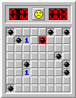

Playing MinesweeperThe game board is a grid of squares. At the start of the game, all of the squares are covered. Some of the squares contain hidden mines!Your challenge is to uncover all of the squares that do not contain mines, leaving all of the mines covered. To uncover a square, click on it with the left mouse button. |
|  |
Watch Out For MinesBeware! if you click on a mined square, the game is over! To start a new game, click on the yellow face at the top of the board. |
Locating MinesAn uncovered square that does not contain a mine either contains a number or is blank. If the square contains a number, it represents the number of adjacent squares that are mined. There are eight adjacent positions: top, bottom, left, right, top left, top right, bottom left, bottom right. If the square is blank, there are no adjacent mines. The game automatically uncovers all of the adjacent positions in this case. Use the numbers on the uncovered squares and a bit of logic to detect the positions of the mines! |
Marking SquaresWhen you locate a mine, click on it with the right mouse button to flag it. (Mac users: read this) When you click on a covered square with the right mouse button, you rotate its display through three states: clear, flagged and question-marked. If you accidentally left-click a flagged square, the game does not uncover it! The question mark has no special function and is there to use as you see fit. |
Making the GradeWhen you uncover the last unmined square, the game is over and you win!The ticking counter in the upper right corner of the board shows your playing time in seconds. The object is to win the game in as little time as possible. The lower the number in the upper right corner when you win, the better. |
Clearing around squares:If a square is uncovered, you may quickly uncover all unflagged adjacent squares by clicking both the left and right mouse buttons on the square simultaneously. Use this valuable shortcut to reduce your time and improve your score. Flag the squares that you know are mined. When you believe that all the mined squares adjacent to an uncovered square are flagged, clear the remaining squares in one stroke, rather than uncovering each one by one... but beware - if you have flagged a square incorrectly, you will uncover a mine! |
Using the Mine CounterThe counter in the upper left corner of the board shows the number of squares left to flag. At the start of the game, the number equals the number of mines on the board. The number is reduced by one whenever you flag a square. Notice that the counter only counts flags; it does not tell you whether you have correctly flagged mined squares!The First Click:The first square you uncover is never mined. Use this knowledge to your advantage! |
ALL CONTENT (C) 2006 BY JAMES ECHMALIAN.